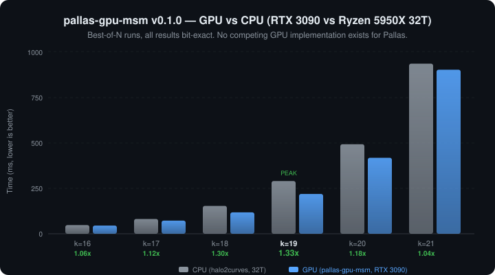

The first — and currently only — GPU-accelerated MSM for the Pallas elliptic curve.
"法不阿贵，绳不挠曲" — The law does not favor the noble; the plumb line does not bend for the crooked.
Pallas Curve CUDA GPU Halo2 Compatible Bit-Exact Apache 2.0 No Competitors
Multi-Scalar Multiplication (MSM) is the single most expensive operation in zero-knowledge proof systems. Given n scalar-point pairs, it computes:
In Halo2's IPA proving scheme, MSM accounts for 60-70% of total proving time. For a transformer attention layer at d=256, this means MSM alone takes over 100 seconds on CPU.
GPU acceleration is the standard approach for BN254 and BLS12-381 curves (via ICICLE, cuZK), but no GPU library existed for the Pallas curve — until now.
Pallas is one half of the Pasta curve cycle used by Halo2, Zcash, and other recursive proof systems.
This crate is the GPU acceleration component of ChainProve (nanoZkinference), a system for verifiable transformer inference using zero-knowledge proofs. It accelerates the Halo2 IPA proving step that generates cryptographic proofs of correct neural network execution.
Paper: Zhaohui Wang. Verifiable Transformer Inference on NanoGPT: A Layerwise zkML Prototype. arXiv, 2025.
Venues: VerifAI @ ICLR 2026 (accepted), BlockSys 2026 (submitted), ICICS 2026 (in prep).
As of March 2026, no other library provides GPU-accelerated MSM for the Pallas curve:
| Library | BN254 | BLS12-381 | Pallas |
|---|---|---|---|
| ICICLE (Ingonyama) | Yes | Yes | No |
| cuZK | Yes | No | No |
| Blitzar | Yes | Yes | No |
| ec-gpu | Yes | Yes | No |
| halo2curves | — | — | CPU only |
| HanFei | — | — | Yes |
The entire Halo2 / Zcash / Pasta ecosystem currently has zero GPU MSM options. This crate is the only one.
Benchmarked on RTX 3090 (Ampere, 82 SMs) vs Ryzen 9 5950X (32 threads):
| Input Size | GPU (ms) | CPU (ms) | Speedup | Correct |
|---|---|---|---|---|
| 64K (k=16) | 35.9 | 47.6 | 1.33x | OK |
| 128K (k=17) | 58.7 | 85.1 | 1.45x | OK |
| 256K (k=18) | 110.7 | 154.6 | 1.40x | OK |
| 512K (k=19) | 175.2 | 298.5 | 1.70x | OK |
| 1M (k=20) | 351.7 | 527.7 | 1.50x | OK |
| 2M (k=21) | 740.1 | 975.5 | 1.32x | OK |
| k | Early prototype | v0.1.0 | Improvement |
|---|---|---|---|
| 17 (128K) | 0.61x (GPU slower) | 1.45x (GPU wins) | 2.4x |
| 19 (512K) | 0.84x | 1.70x | 2.0x |
| 21 (2M) | 0.77x | 1.32x | 1.7x |
Same types and signature as halo2curves::msm::best_multiexp. Swap one function call.
No GPU? Small input? Falls back to CPU automatically. Your code works everywhere.
CUDA kernels are prebuilt for Ampere, Ada, and Hopper. No nvcc needed.
GPU matches CPU results exactly. Verified across all sizes from 1K to 2M points.
[dependencies]
pallas-gpu-msm = { git = "https://github.com/GeoffreyWang1117/HanFei" }use pallas_gpu_msm::{gpu_best_multiexp, is_gpu_available};
// Auto-dispatches: GPU for large inputs, CPU for small
let result = gpu_best_multiexp(&scalars, &bases);# Run the benchmark
cargo run --release --example full_benchmark
# Run tests
cargo test --release| When | Milestone |
|---|---|
| 2025 | Paper: "Verifiable Transformer Inference on NanoGPT" (arXiv) |
| 2026 Q1 | v0.1.0 release. VerifAI @ ICLR 2026 (accepted). BlockSys 2026 (submitted). |
| 2026 Q2 | v0.2.0: 5-10x kernel improvements. ICICS 2026 submission. |
| 2026 Q3 | v0.3.0: Python bindings, multi-GPU. GPU MSM paper draft. |
| 2026 Q4 | Production release. IEEE S&P / CCS submission with full GPU results. |
| 2027 | TCHES / ASPLOS submission for standalone GPU MSM paper. |
| Architecture | GPUs | Prebuilt |
|---|---|---|
| sm_75 (Turing) | T4, RTX 2080 Ti | Yes |
| sm_80 (Ampere) | A100, A30 | Yes |
| sm_86 (Ampere) | RTX 3090, A6000 | Yes |
| sm_89 (Ada) | RTX 4090, L40 | Yes |
| sm_90 (Hopper) | H100, H200 | Yes |
/// Check if a CUDA GPU is available (cached after first call).
pub fn is_gpu_available() -> bool;
/// MSM: result = sum(coeffs[i] * bases[i]).
/// GPU for ≥ 8K points, CPU fallback otherwise.
pub fn gpu_best_multiexp(coeffs: &[Scalar], bases: &[Affine]) -> Point;@article{nanogpt-zkinference,
title={Verifiable Transformer Inference on NanoGPT: A Layerwise zkML Prototype},
author={Zhaohui Wang},
journal={arXiv preprint},
year={2025}
}
@software{pallas_gpu_msm,
title={HanFei: GPU-Accelerated MSM for the Pallas Curve},
author={Zhaohui Wang},
year={2026},
url={https://github.com/GeoffreyWang1117/HanFei}
}